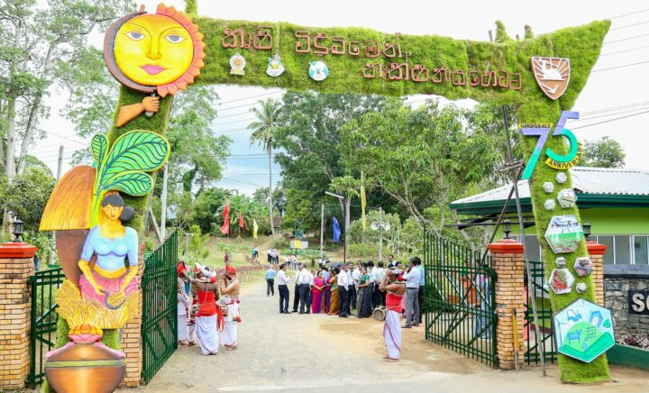
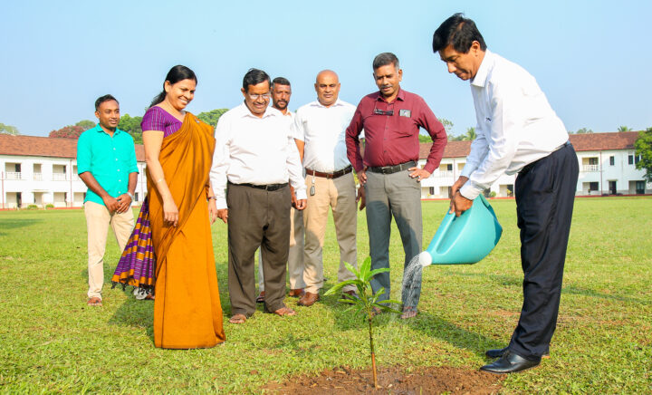
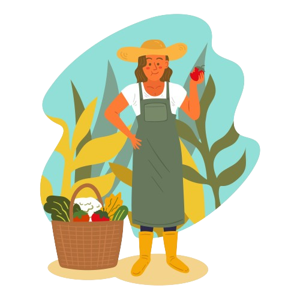
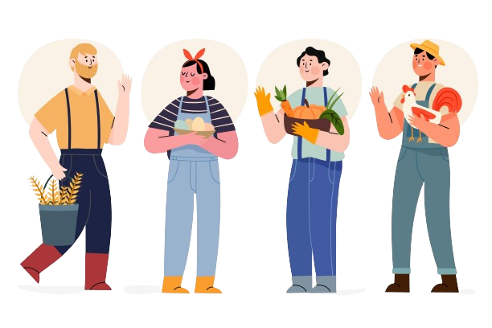
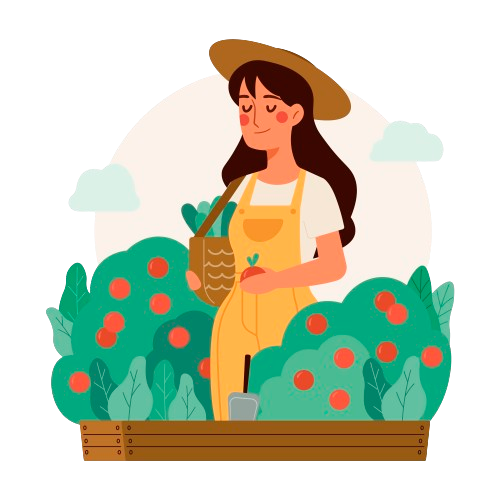

Rice Research and Development Institute
Administration Division
Seed Certification & Plant Protection Centre (SCPPC) - Gannoruwa
Seed and Planting Material Development Centre - SPMDC
National Agriculture Information and Communication Centre - NAICC
Extension and Training Centre - ETC
Natural Resources Management Centre - NRMC
Fruit Research and Development Institute (FRDI)
Horticultural Crops Research and Development Institute - HORDI
Field Crops Research and Development Institute
Rice Research and Development Institute
Establishments Division
Finance Division of Department of Agriculture
Internal Audit Division of Department of Agriculture
Progress Monitoring & Evaluation Unit - PMEU
Rice Research and Development Institute
Administration Division
Seed Certification & Plant Protection Centre (SCPPC) - Gannoruwa
Seed and Planting Material Development Centre - SPMDC
National Agriculture Information and Communication Centre - NAICC
Extension and Training Centre - ETC
Natural Resources Management Centre - NRMC
Fruit Research and Development Institute (FRDI)
Horticultural Crops Research and Development Institute - HORDI
Field Crops Research and Development Institute
Rice Research and Development Institute
Establishments Division
Finance Division of Department of Agriculture
Internal Audit Division of Department of Agriculture
Progress Monitoring & Evaluation Unit - PMEU
SERVICES
Technical Assistance
Farmers frequently require assistance with putting sustainable agricultural practices into practice. Experts from the Department of Agriculture may visit farms, evaluate their unique requirements, and offer specialized guidance on environmentally friendly practices and technology.
Training and Workshops
Workshops and training sessions can cover a variety of subjects, from the usage of eco-friendly pest control techniques to the concepts of organic farming. These educational initiatives provide farmers with the information and abilities they need to adopt sustainable practices.
Financial
Support
Support
Financial incentives, such as grants and subsidies, can help farmers overcome initial financial barriers when transitioning to eco-farming. Low-interest loans may also be offered to support investments in sustainable infrastructure and equipment.
Soil Testing and Analysis
For agriculture to be sustainable, soil health is essential. Departments of agriculture provide soil testing services for analyzing soil's organic matter content, pH, and nutrient levels. Farmers can get suggestions for amending their soil to increase its fertility and structure.
Crop Rotation Plans
Crop rotation is a crucial practice for sustainable farming. Departments can assist farmers in creating rotation schedules that maintain a balance in the cycling of nutrients, lessen soil erosion, and disrupt pest and disease cycles.
Pest Management Strategies
The usage of chemical pesticides is reduced by the science-based practice of integrated pest management (IPM). Departments offer instructions on how to use trap crops, beneficial insects, and other IPM techniques to reduce pests.
Organic Certification
Farmers that are certified organic are guaranteed to follow rigid guidelines for organic farming. Departments help farmers comprehend and adhere to these rules, which may be difficult.
Water Conservation Guidance
In areas with water shortage in particular, sustainable water management is essential. To minimize water use, departments provide guidance on water-efficient practices, rainwater gathering, and drip irrigation.
Conservation Planning
Plans for conserving farmland aid in preserving important natural resources. Plans for preserving wetlands, restoring natural ecosystems, and maintaining farmland forests may be included in these plans.
Climate-Resilient Farming
Climate-smart agriculture includes practices like planting drought-resistant crops, optimizing planting dates, and using agroforestry to enhance resilience to climate change. Departments provide information on these strategies.
Market
Access
Access
Eco-farmers frequently struggle to gain access to markets that value sustainable products. Departments can assist community-supported agriculture (CSA) programs, eco-labeling, farmers' markets, and connecting farmers with markets.
Waste
Management
Management
Proper waste management includes composting crop residues, recycling materials, and minimizing farm-generated waste. Departments can educate farmers on sustainable waste practices.
For more information, please contact the field officer in your area for more assistance or just create an account and send your problems.
EVENTS

75th Anniversary of Sri Lanka Agricultural College

Consultative workshop on Millet Development in Sri Lanka

Farmers Day and Agricultural Fair - 2023

The Field Day of RRDI
Farmer's Day

The National Planting Ceremony
ABOUT US

VISION
Achieve excellence in agriculture for national prosperity.
MISSION
Achieve an equitable and sustainable agriculture development,
ensuring nations food and nutrition security through development
and dissemination of improved agriculture technology
and provide the relevant services to the all
stakeholders with more emphasis to the farmers”.


OBJECTIVE
Maintaining and increasing productivity and production of
the food crop sector for the purpose of enhancing the income
and living condition of the farmer and making food
available at affordable prices to the consumer..